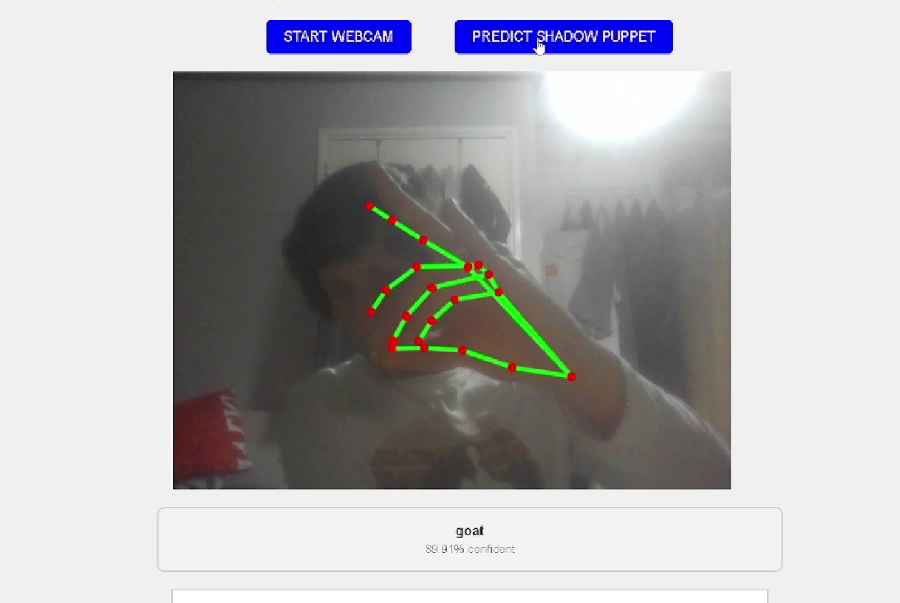
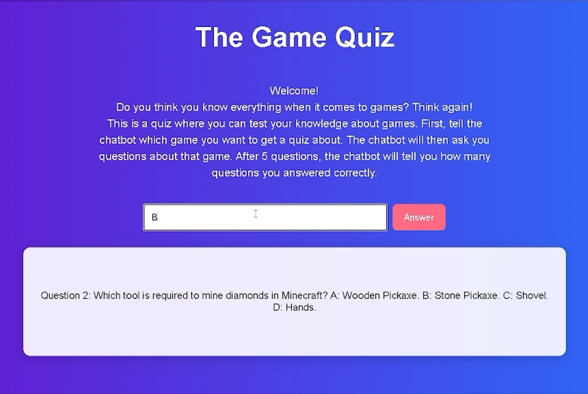

Deze programmeervak bestond uit twee onderdelen: een website maken die met AI handbewegingen kan herkennen en een chatbot maken. Als eerste programmeerde ik een website waarmee je schaduwpoppen kunt maken met je handen. Daarna probeerde de AI de handbewegingen te raden. Ook laat het zien hoe zeker de AI is van zijn antwoord.
Toen ik hiermee klaar was, maakte ik een chatbot. De chatbot stelt vragen over een game dat de gebruiker heeft gekozen, en de gebruiker moet alle vragen correct beantwoorden. Ook kan de chatbot grote documenten (van minstens 15 bladzijden lang met alleen maar tekst!) lezen door ze eerst op te splitsen in chunks. Daarna kon de chatbot vragen stellen over de inhoud van die documenten.
Klik hier om de Github repository te bekijken van de site voor handbewegingen, en klik hier voor de code van de chatbot.

